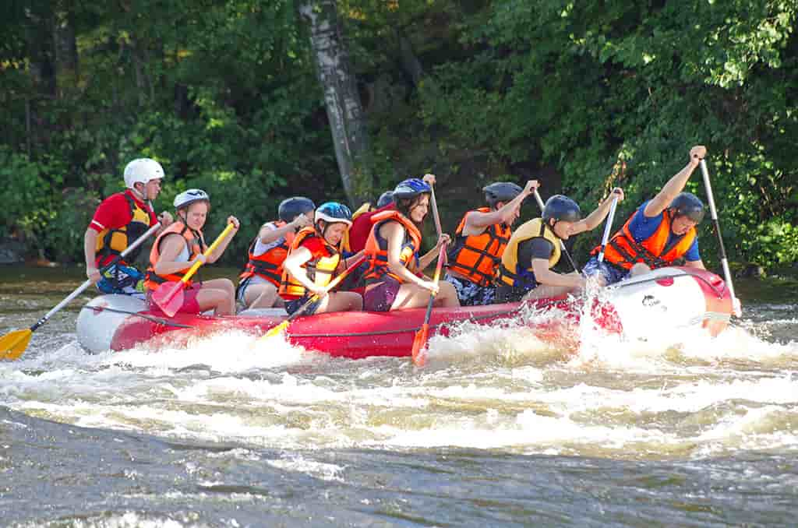
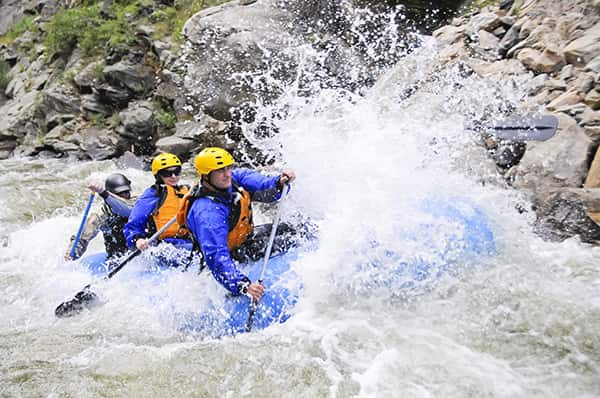

SPLASH WHITE WATER RAFTING

The company is dedicated to providing safe, exciting, and unforgettable rafting
adventures that connect people with nature. Its mission is to deliver
high-quality whitewater experiences through safety, teamwork, environmental
responsibility, and excellent customer service, while believing that adventure
should always be thrilling, accessible, and centered on respect for the river
and our guests.
The company was founded by a group of outdoor enthusiasts who shared a passion for
adventure, teamwork, and the natural beauty of rivers. What started as a small
rafting operation with a few rafts and local guides quickly
grew as more people discovered the excitement and challenge of whitewater rafting.
From the beginning, the company focused on safety, professional training, and
respect for the environment.

Over the years, it expanded its routes, improved its
equipment, and trained certified guides to ensure every trip was both thrilling and
secure.Today, the company is known for delivering memorable rafting experiences to
beginners and experienced rafters alike, while remaining committed to river
conservation, community involvement, and responsible tourism.